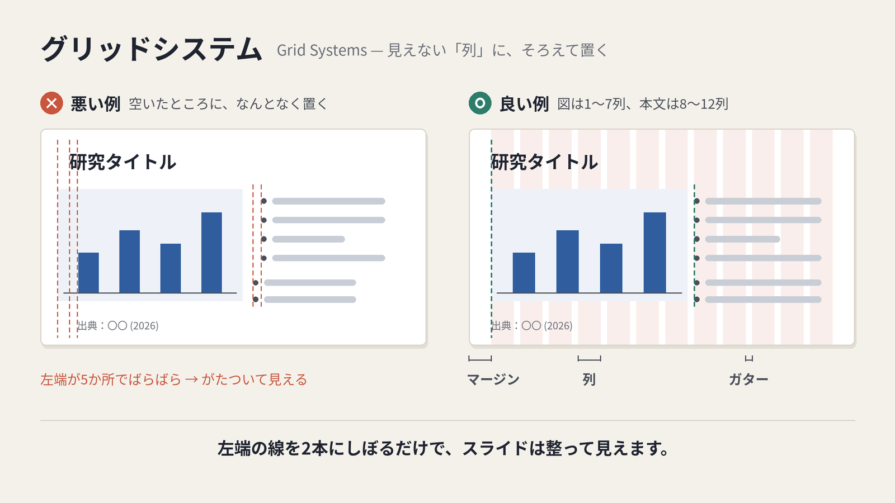
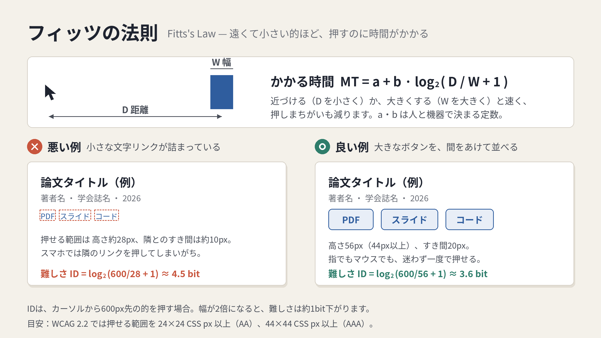
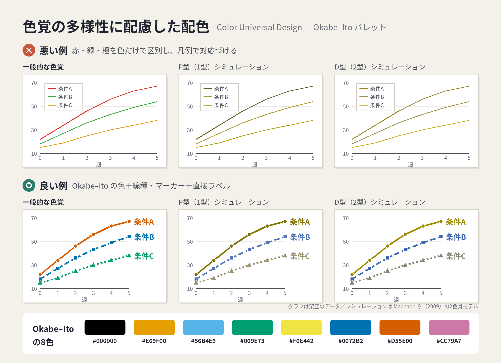
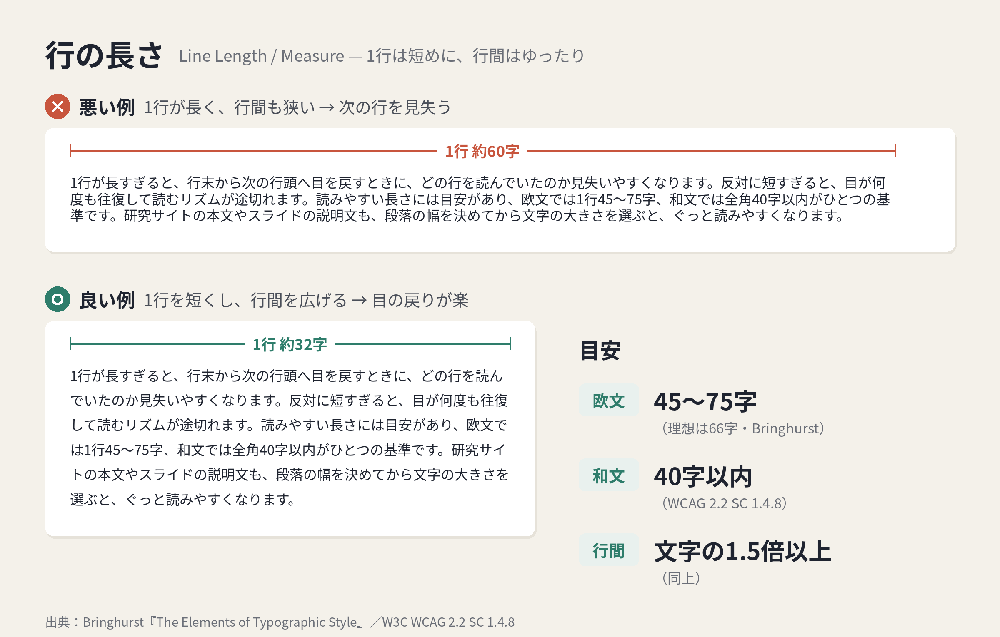
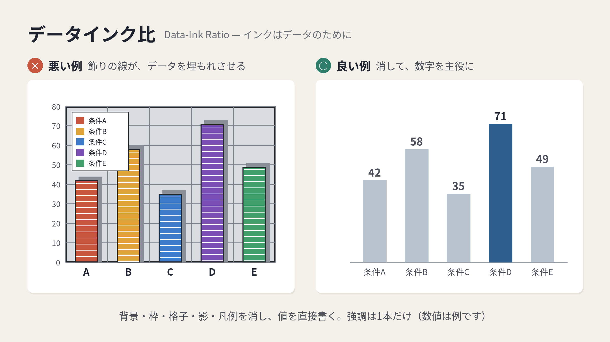
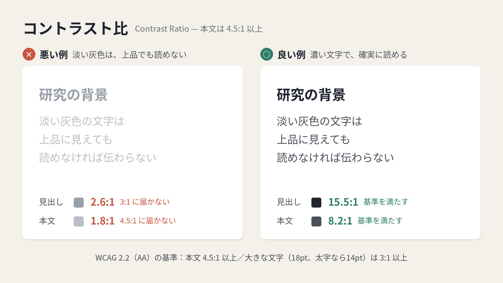
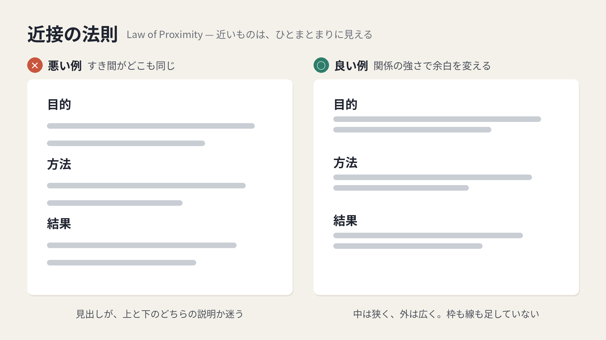

全8回、最新は
-
レイアウト・グリッド
グリッドシステム
Grid Systems
画面を見えない「列」と「すき間」で先に区切り、要素をその線にそろえて置くと、ページ全体に秩序が生まれます。

-
UI/UXの法則
フィッツの法則
Fitts's Law
ボタンやリンクは「近く」「大きく」。押すのにかかる時間は、的までの距離と的の大きさの比で決まります。

-
色彩
色覚の多様性に配慮した配色
Color Universal Design (Okabe–Ito Palette)
グラフの色分けは「赤と緑」をやめて、色覚のちがいを越えて見分けやすい Okabe–Ito の色に。色だけに頼ら…

-
プレゼン・スライドのデザイン
アサーション・エビデンス
Assertion–Evidence Approach
スライドの見出しは「話題」ではなく「主張の文」に。本文は箇条書きではなく、その主張を示す図にしましょう。

-
タイポグラフィ
行の長さ
Line Length (Measure)
文章は1行を短めに。欧文なら45〜75字、日本語なら40字以内を目安に、段落の幅を先に決めましょう。

-
データビジュアライゼーション
データインク比
Data-Ink Ratio
グラフのインクは、できるだけデータそのものに使う。消しても情報が減らない線は消してみましょう。

-
アクセシビリティ
コントラスト比
Contrast Ratio
文字と背景の明るさの差は、数値で確かめられる。本文は 4.5:1 以上が目安です。

-
ゲシュタルト原則
近接の法則
Law of Proximity
近くにあるものは、ひとまとまりに見える。余白は関係を伝える言葉です。
